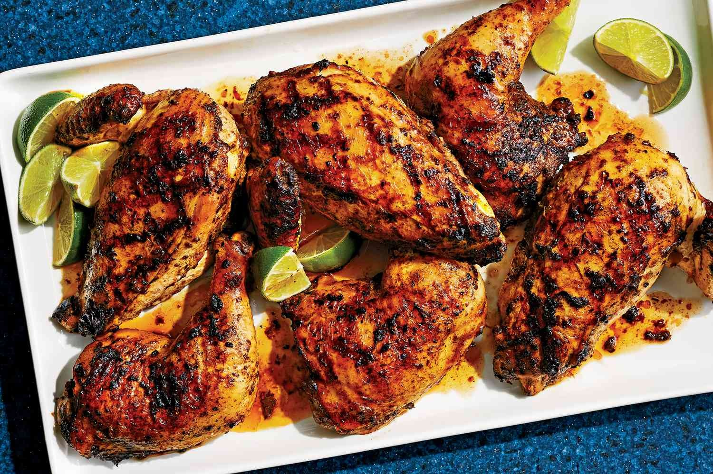

Jerk Chicken marinade

Ingredients
Description
A simple marinade variation for jerk chicken. Hot, deeply spiced and perfect for the barbecue.
Ingredients
- 1 medium onion, chopped
- 3 spring onions
- 2 Scotch bonnet chillies
- 2 garlic cloves
- 1 tbsp five-spice
- 1 tbsp all-spice berries, coarsely ground
- 1 tbsp ground black pepper
- 1 tsp dried thyme
- 1 tsp ground nutmeg
- 1 tsp salt
- 120 ml of soy sauce
- 1 tbsp vegetable oil
- 2 chickens, quartered
Steps
- Add all the dry ingredients too a food processor and blend.
Slowly add soy sauce and vegetable oil while blending. THen pour marinade on and leave overnight.
- grill hte chicken over a medium flame, turning often for around 35-40 mins. Then serve